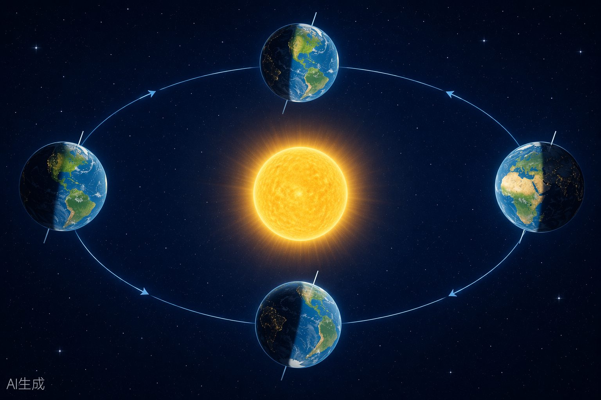

地球运动是自然地理的基础，也是全卷中最考验空间思维和计算能力的部分。本专题涵盖地方时与区时计算、正午太阳高度、昼夜长短变化、日界线、日照图判读五大考点。计算题需掌握"东加西减"原则，日照图判读需要空间想象能力。
| 概念 | 定义 | 关键公式/规则 |
|---|---|---|
| 地方时 | 因经度不同而不同的时刻。经度每隔15°，地方时相差1小时；每1°相差4分钟。 | 所求地方时=已知地方时±4分钟/度×经度差 |
| 区时 | 各时区中央经线的地方时。全球共24个时区，每时区跨15°。 | 时区号=经度÷15°（余数>7.5°则进一） |
| 北京时间 | 东八区的区时，即120°E的地方时（非北京地方时116°E）。 | 全国统一使用 |
| 计算原则 | 东加西减：向东每跨一个时区加1小时，向西减1小时。 | 过日界线需注意日期变更 |
【例题】已知北京（120°E）为2024年6月21日12:00，求纽约（75°W）的区时和地方时。
① 确定时区：北京在东八区（120°E÷15=8），纽约在西五区（75°W÷15=5）。
② 计算时区差：8 + 5 = 13个时区（一东一西，时区号相加）。
③ 纽约区时 = 12:00 - 13:00 = 6月20日 23:00（向西减，过0点日期减一天）。
④ 纽约地方时：经度差 = 120° + 75° = 195°，时间差 = 195 × 4 = 780分钟 = 13小时。
⑤ 纽约地方时 = 6月21日12:00 - 13h = 6月20日 23:00。
答案：纽约区时 6月20日23:00；纽约地方时 6月20日23:00。
| 巩固提升 | |
| 1.当东京（139°E）地方时为2024年7月1日8:00时，求伦敦（0°）的区时和地方时。 | |
| 答案：步骤：①东京在139°E，时区=139÷15≈9.27，余数1.27<7.5，属东九区（135°E中央经线）。②伦敦在0°经线，属中时区（零时区）。③区时差=9-0=9小时。④伦敦区时=8:00-9:00=6月30日23:00。⑤地方时差=(139°-0°)×4=556分钟≈9h16min。⑥伦敦地方时=8:00-9h16min=6月30日22:44。答：伦敦区时6月30日23:00；伦敦地方时6月30日22:44。 |
2. 当纽约（西五区）为2024年3月15日20:00时，求北京时间和东京（东九区）区时。
=3月15日20:00+13:00=3月16日9:00。③东京东九区→纽约西五区，时区差=9+5=14小时。④东京区时=3月15日20:00+14:00=3月16日10:00。
答：北京时间3月16日9:00；东京区时3月16日10:00。
3. 已知某地经度为98°E，当该地地方时为正午12:00时，求此时北京时间（120°E地方时）。
钟。③北京在98°E以东，东加：北京时间=12:00+1h28min=13:28。
答：北京时间为13:28。
4. 一架飞机于北京时间2024年7月10日8:00从上海（东八区）起飞，飞行12小时后到达洛杉矶（西八区）。求到达时洛杉矶的区时。
=8+8=16h，洛杉矶区时=7月10日8:00-16:00=7月9日16:00。②飞行12小时后：7月9日16:00+12:00=7月10日4:00。
答：到达时洛杉矶区时为7月10日4:00。
经，度数大的在东；同为西经，度数小的在东；一东一西则东经在东、西经在西。
减一天。
3. 区时计算用中央经线，地方时计算用实际经度。
| 考点二：正午太阳高度——2H=90°-|φ-δ| | |
| 知识精讲正午太阳高度角（H）是指一天中太阳升到最高位置时（地方时12:00），太阳光线与地平面的夹角。 |
| 日期 | 太阳直射点纬度(δ) | 北半球正午太阳高度变化 |
|---|---|---|
| 春分（3月21日前后） | 0°（赤道） | 从赤道向南北递减 |
| 夏至（6月22日前后） | 23°26'N（北回归线） | 从北回归线向南北递减 |
| 秋分（9月23日前后） | 0°（赤道） | 从赤道向南北递减 |
| 冬至（12月22日前后） | 23°26'S（南回归线） | 从南回归线向南北递减 |
【例题】计算北京（40°N）在夏至日（δ=23°26'N）的正午太阳高度角。
① 代入公式：H = 90° - |40° - 23°26'|。
② 计算差值：40° - 23°26' = 16°34'。
③ H = 90° - 16°34' = 73°26'。
答案：北京夏至日正午太阳高度角为73°26'。
| 巩固提升 | ||
| 1.计算海口（20°N）在夏至日（δ=23°26'N）的正午太阳高度角，并说明太阳在正午时位于天顶的哪一侧。 |
| 答案：步骤：①H=90°-|20°-23°26'|=90°-3°26'=86°34'。②由于δ>φ（23°26'>20°），太阳直射点在海口以北，正午太阳位于天顶的北侧。答：正午太阳高度角86°34'，太阳位于天顶北侧。 | ||
|---|---|---|
| 2.某地冬至日正午太阳高度角为30°，求该地的纬度（假设在北半球）。 | ||
| 答案：步骤：①冬至日δ=23°26'S，代入公式：30°=90°-|φ-(-23°26')|。②|φ+23°26'|=60°。③φ+23°26'=60°φ=36°34'N。→答：该地纬度为36°34'N。 |
3. 比较哈尔滨（45°N）和广州（23°N）在夏至日和冬至日的正午太阳高度角大小。
夏至日(δ=23°26'N)：哈尔滨：H=90°-|45°-23°26'|=90°-21°34'=68°26'。
广州：H=90°-|23°-23°26'|=90°-0°26'=89°34'。
广州 > 哈尔滨。
冬至日(δ=23°26'S)：哈尔滨：H=90°-|45°-(-23°26')|=90°-68°26'=21°34'。
广州：H=90°-|23°-(-23°26')|=90°-46°26'=43°34'。
广州 > 哈尔滨。
总结：纬度越低，正午太阳高度角越大。
4. 已知某地春分日正午太阳高度角为50°，求该地纬度。
答案：步骤：①春分日δ=0°。②50°=90°-|φ-0°| → |φ|=40°。③该地可能为40°N或40°S。
答：该地纬度为40°N或40°S。
值，出现在地方时12:00。
直接相减取绝对值；异半球时，两数绝对值相加。
须准确记忆各节气δ值。
| 规律 | 内容 |
|---|---|
| 根本原因 | 黄赤交角的存在导致太阳直射点在南北回归线之间往返移动。 |
| 直射点北移 | 北半球各地昼长增加，夜长缩短；南半球反之。 |
北半球昼最长、夜最短；北极圈以内出现极昼；南半球相夏至日反。
北半球昼最短、夜最长；北极圈以内出现极夜；南半球相冬至日反。
春秋分 全球昼夜等长（各12小时）。
特殊纬度 赤道上全年昼夜等长；极圈以内有极昼极夜现象。
【例题】北半球某地，从春分到夏至，该地昼夜长短如何变化？
移动，北半球昼长逐渐增加、夜长逐渐缩短。到夏至日，北半球昼长达一年中最长，夜长达一年中最短。
1. 比较北京（40°N）和悉尼（34°S）在夏至日（6月22日）的昼夜长短状况。
答案： 夏至日太阳直射北回归线（23°26'N）。
北京（40°N）：昼长>12小时，夜长<12小时，北半球昼最长夜最短的一天。
悉尼（34°S）：昼长<12小时，夜长>12小时，南半球昼最短夜最长的一天。
答：北京昼长夜短，悉尼昼短夜长。
2. 某地一年中有两天正午太阳高度角达到90°，且该地冬至日昼长大于夏至日昼长。判断该地所处的半球和纬度范围。
（23°26'S~23°26'N）。
②冬至日昼长>夏至日昼长，说明该地冬至日白昼更长，冬至日太阳直射南回归线，南半球昼长夜短。
③综上，该地位于南半球的热带地区（0°~23°26'S）。
答：该地位于南半球，纬度在0°~23°26'S之间。
3. 北极圈（66°34'N）在夏至日会出现什么现象？在冬至日呢？
以北区域出现极昼现象（24小时太阳不落）。
（24小时不见太阳）。
答：夏至日极昼，冬至日极夜。
4. 简述"昼长=日落时间-日出时间"的计算方法，并推导北半球某地昼长与夜长的关系。
答案： 昼长=日落时刻-日出时刻（以地方时计算）。
若日出为6:00，日落为18:00，则昼长=12小时（春秋分）。
若日出为5:00，日落为19:00，则昼长=14小时，夜长=24-14=10小时。
| 长<夜长。关系：昼长+夜长=24小时。 | |||||
|---|---|---|---|---|---|
| ⚠易错警示1."昼长"是以地方时计算的，不是区时：同一时区内东西两侧的地方时不同，日出日落时间也不同。2.昼夜长短的变化方向由太阳直射点的移动方向决定：直射点北移→北半球昼变长；直射点南移→北半球昼变短。 |
| 日界线类型 | 位置 | 日期变更规则 |
|---|---|---|
| 国际日期变更线（人为日界线） | 大致沿180°经线（有折弯） | 自东向西越过加一天；自西向东越过减一天 |
| 自然日界线（0时日界线） | 地方时为0时（或24时）的经线 | 自东向西越过加一天；自西向东越过减一天 |
| 东），从0时经线到180°经线为"今天"的范围。 | 两条日界线将全球分为"今天"和"昨天"两个区域。顺着地球自转方向（自西向 |
【例题】当北京时间为2024年6月21日8:00时，全球属于6月21日的范围占全球的比例是多少？
① 北京时间8:00即120°E为8:00。
② 求0时经线：120°E-8h×15°/h=120°E-120°=0°（即0°经线为0时）。
③ 6月21日的范围：从0°经线（0时）向东到180°经线，跨180个经
| 度。比例：180°/360°=1/2。4答案：全球属于6月21日的范围占1/2。 | ||||||||
|---|---|---|---|---|---|---|---|---|
| 巩固提升 | ||||||||
| 1. | 当北京时间为2024年1月1日20:00时，全球属于1月1日的范围占全球的比例？ | |||||||
| 答案：步骤：①120°E为20:00。②0时经线：120°E-20h×15°=120°E-300°=180°W（即180°经线为0时）。③1月1日范围：从180°经线（0时）向东到180°经线（国际日界线），即全球。答：全球都属于1月1日，比例为100%（即1）。 |
2. 一艘轮船于2024年5月1日12:00从东十二区出发，向东越过国际日期变更线进入西十二区，此时西十二区的日期和时间是多少？
变。
东十二区：5月1日12:00，越过日界线后→西十二区：4月30日12:00。
答：西十二区为4月30日12:00。
3. 当东经30°为0:00时，求"今天"和"昨天"的范围各占多少经度。
180°经线，跨150°经度。③"昨天"范围：从180°经线向东到30°E（即向西绕地球），跨210°经度。
答："今天"占150°经度，"昨天"占210°经度。
弯，目的是避免同一国家/地区出现两个日期。
差一天。
日照图（太阳光照图）是地球运动的核心考查形式。判读要点：
| 判读内容 | 方法 |
|---|---|
| 判断南北半球 | 自转方向：逆时针（北半球俯视图）/顺时针（南半球俯视图） |
| 判断节气 | 晨昏线与极圈相切：北极圈内极昼→夏至；北极圈内极夜→冬至；晨昏线过极点→春秋分 |
判断晨昏顺自转方向由夜入昼→晨线；由昼入夜→昏线线晨线与赤道交点→6:00；昏线与赤道交点→18:00；太阳直判断时间射点所在经线→12:00判断昼夜某纬线昼弧所跨经度÷15°=昼长（小时）长短
【例题】读北极俯视日照图，北极圈内全部为极昼，判断此时节气、太阳直射点纬度、北京昼夜长短状况。
① 北极圈内全部极昼 → 太阳直射北回归线（23°26'N）。
② 节气为夏至（6月22日前后）。
③ 北京（40°N）在北半球，夏至日昼最长、夜最短。
天。
1. 在北极俯视日照图中，晨昏线恰好经过北极点。判断此时节气，并说明全球昼夜长短状况。
答案： 晨昏线经过北极点，说明晨昏线与经线重合，太阳直射赤道（0°）。
节气为春分或秋分。
全球昼夜等长，各为12小时。
答：春分或秋分；全球昼夜等长。
2. 在南极俯视日照图中，南极圈以南为极昼。判断此时北半球的节气及北京昼夜长短。
答案： 南极圈以南为极昼 → 太阳直射南回归线（23°26'S）。
北半球节气为冬至（12月22日前后）。
北京（40°N）：昼最短、夜最长，昼长<12小时。
答：冬至；北京昼短夜长，昼长一年中最短。
3. 某日照图中，图中A点位于晨线上且刚好在赤道上。已知A点所在经线为90°E，求此时太阳直射点的经度。
太阳直射点所在经线为12:00，经度差=6h×15°/h=90°。③直射点经度=90°E+90°=180°（即180°经线）。
答：太阳直射点经度为180°。
| ⚠易错警示1.俯视图的旋转方向判断南北半球：北逆南顺（北半球逆时针转，南半球顺时针转）。2.晨线上的点正经历日出，昏线上的点正经历日落。不要混淆。 |